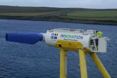

Innovative tidal technology gets $4.6 million funding
The European Commission has awarded 4.4 million euros ($4.63 million) in funding to a European tidal energy consortium to demonstrate innovative technology for tidal turbines.
The consortium, led by Scotland's Nova Innovation, will use the funding to demo and show a "direct drive power take-off (PTO) solution" for tidal turbines. According to Nova Innovation, this technology could help to cut the lifetime cost of tidal power by 20 percent.
The project will be known as TiPA (standing for Tidal turbine Power take-off Accelerator) and run for 36 months. Organizations involved in the project include Siemens, the University of Edinburgh, and Delft Technical University, among others.

“We are delighted to collaborate with our European partner organisations to deliver TiPA to develop and demonstrate our innovative direct drive PTO for tidal turbines,” Simon Forrest, Nova Innovation’s managing director, said in a news release on Wednesday.
“This will be a major step forwards for the global sector and significantly drive down the lifetime cost of tidal energy,” Forrest added.
The U.K. has a great deal of potential when it comes to tidal energy. In 2013, the U.K. government said that wave and tidal stream energy had the potential to meet as much as 20 percent of the country’s then electricity demand.